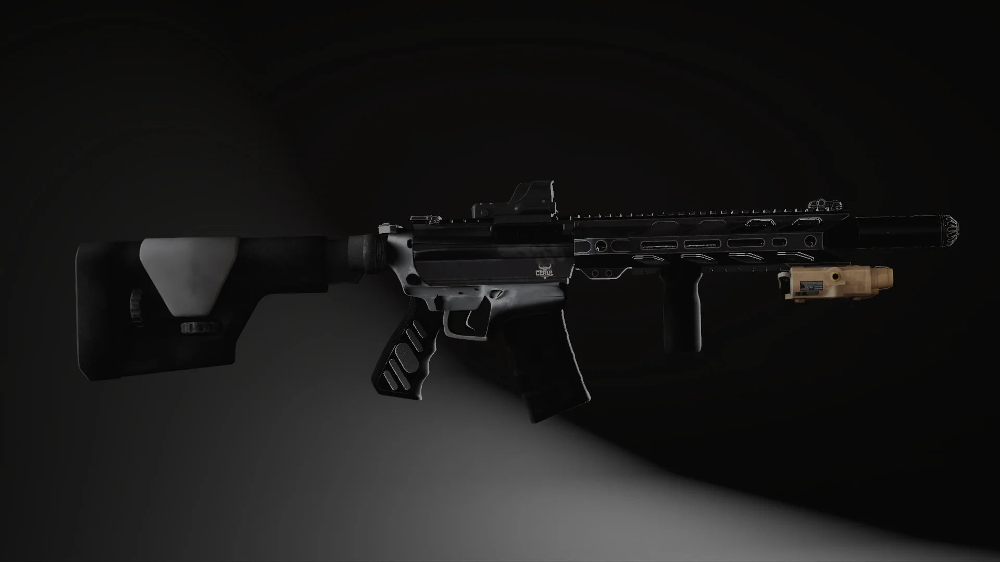
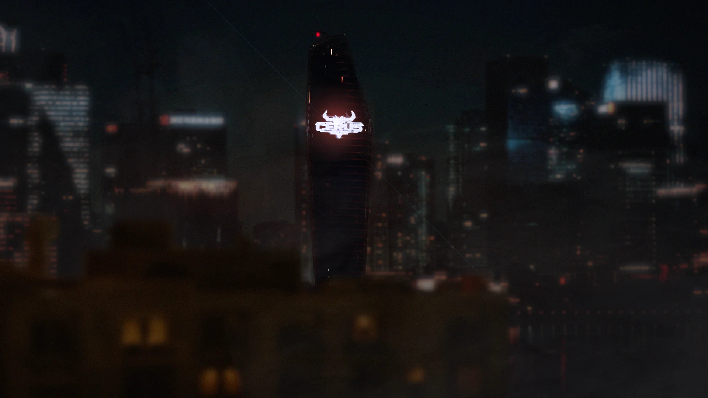
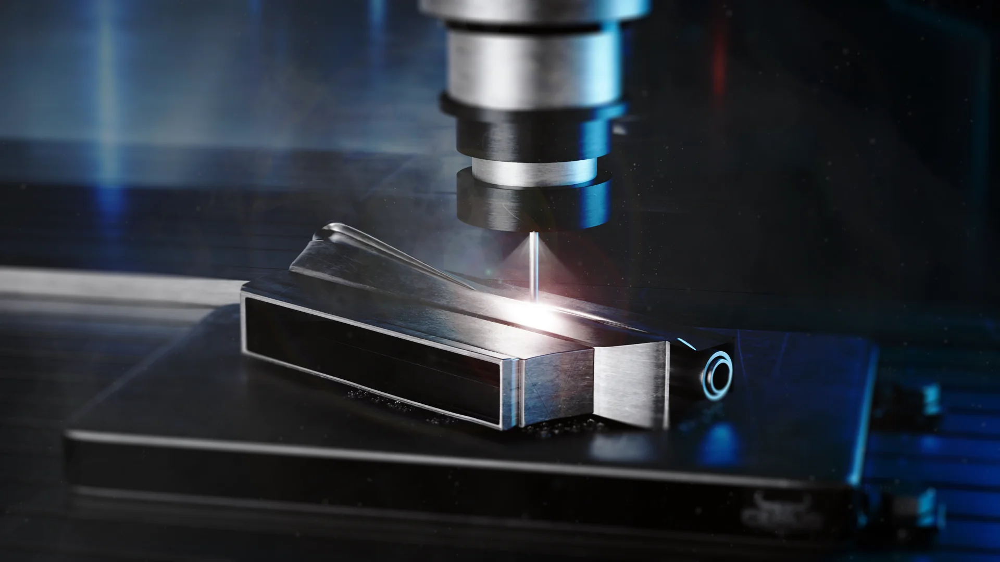
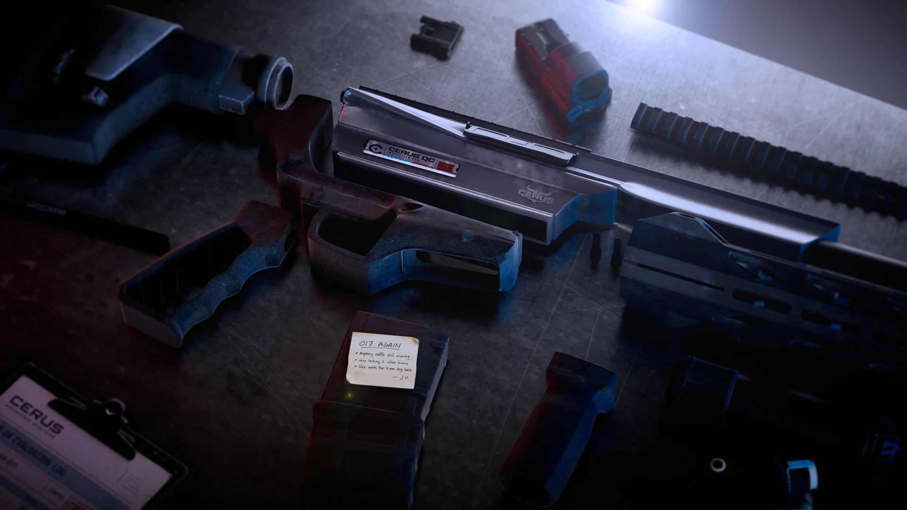
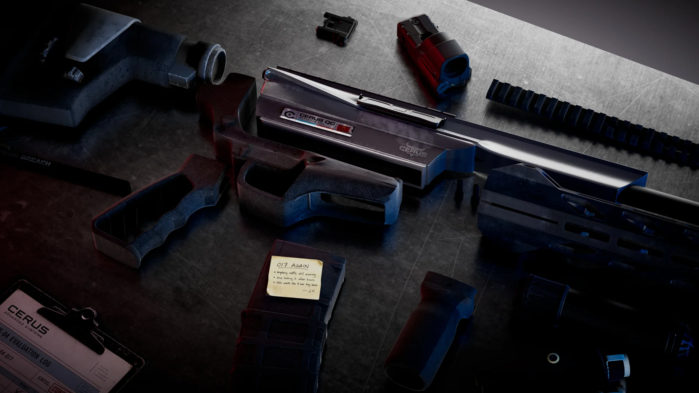
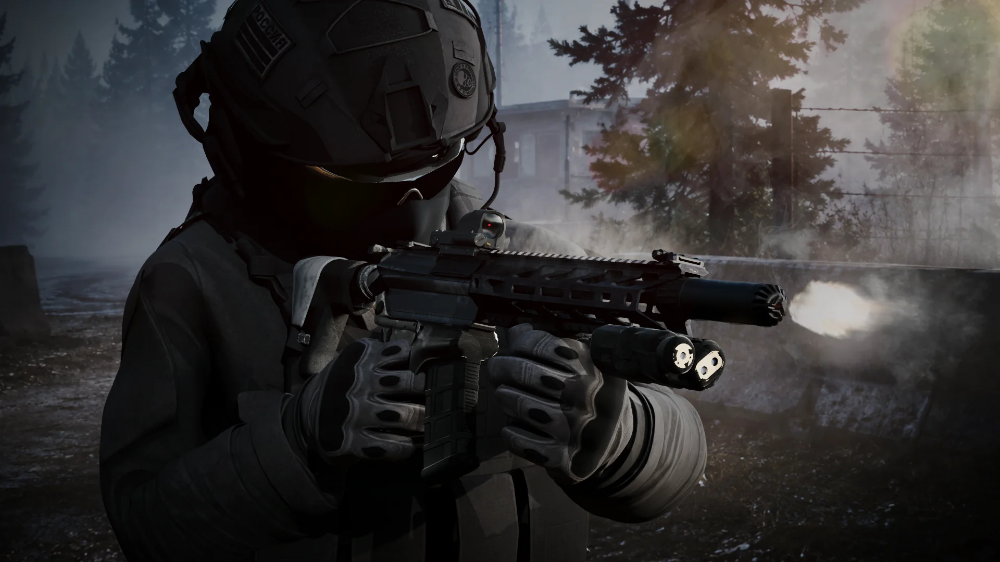
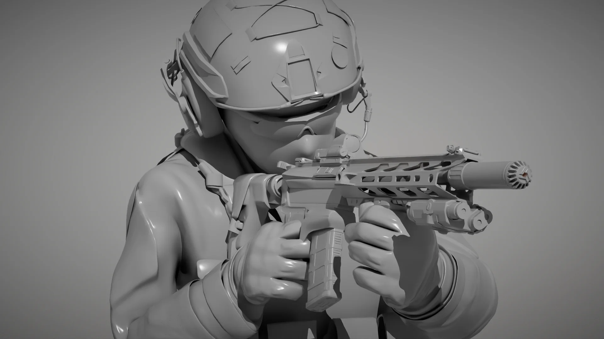
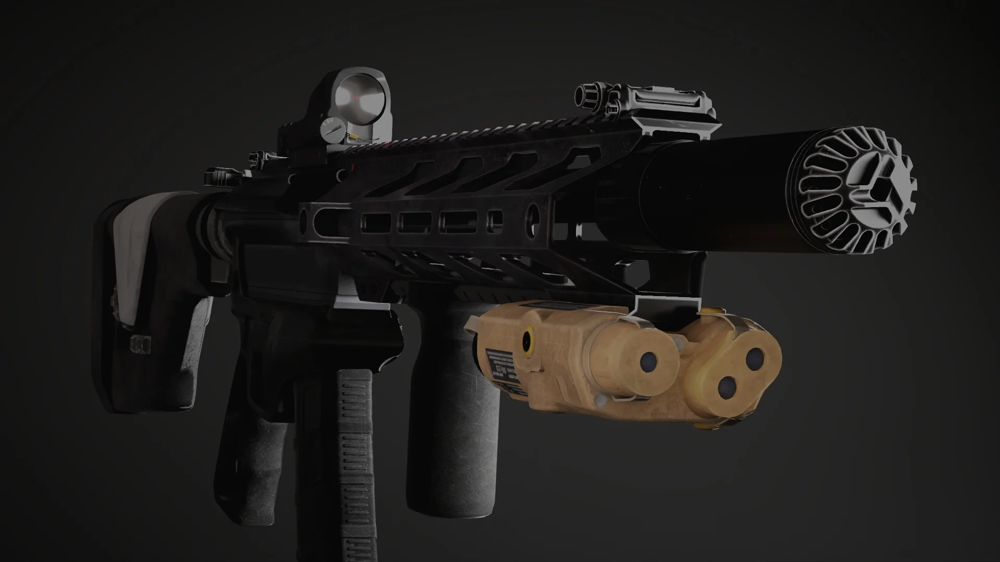
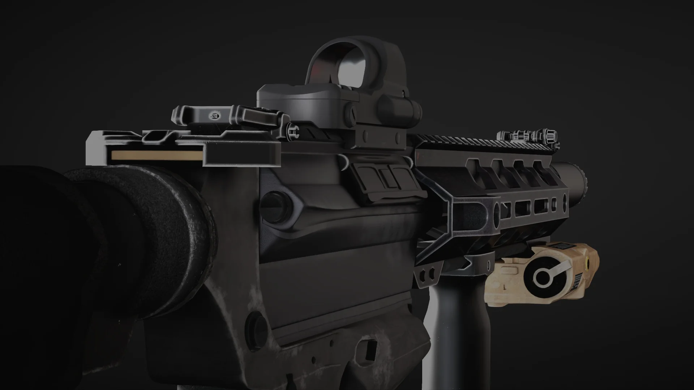

M4 HYBRID / A FICTIONAL CGI CASE STUDY
CERUS
BLACKSITE
One experimental weapon.
The world that makes it. The field that changes it.
Software / Autodesk Maya · Arnold · Adobe Substance 3D Painter · Adobe Photoshop
CERUS and Black Division are fictional organisations.
Follow the asset ↓01 / THE INSTITUTION
Before the weapon,
the name.
The programme begins with CERUS. A distant corporate tower establishes the scale of the organisation; its identity will reappear on the components below.

02 / MANUFACTURE
From institution
to object.
The camera moves inside. Cold blue reflections and a tight industrial composition bring the story down from architecture to a single metal component.

03 / ASSEMBLY
A trace of
human hands.
On the workbench, the weapon becomes a collection of parts. A QC seal, inspection paperwork and a handwritten note connect the corporate programme to the people handling it.

Inside this shot / inspection details & colour grade
QC sealThe inspection decal carries the corporate identity onto the asset.
Handwritten noteA personal trace interrupts the controlled industrial setting.
Surface separationMetal, polymer and paper read differently under the same light.
Workbench / raw render to final grade
Drag to compare the supplied ungraded render with the final treatment of the same composition.

04 / DEPLOYMENT
Out of the lab.
Into the field.
The controlled bench gives way to a misty exterior. In the hands of a fictional Black Division operator, the asset becomes part of a larger scene—defined by use, atmosphere and scale.

Inside this shot / clay, lighting & final composite
These passes all belong to the field character composition. Explore the form, lighting, final composite and UV checker without switching scenes.


05 / ASSET INSPECTION
Closer to
the surface.
With the story complete, return to the object. Close views reveal the machined forms, markings and surface wear that hold up beyond the wider compositions.




One asset. A connected world.
The visual challenge is keeping dark materials legible across corporate, industrial and field environments. Recurring CERUS markings, selective highlights and small human details connect the scenes. Together, the images show hard-surface craft carried through look development, lighting and compositing into environmental storytelling.
Planned additions & production credits
Not yet supplied: barracks storage scene; Base Colour, Roughness, Metalness and Normal map exports; matched clean and field-worn renders. These will be added when available, rather than simulated.
Software: Autodesk Maya, Arnold, Adobe Substance 3D Painter and Adobe Photoshop.